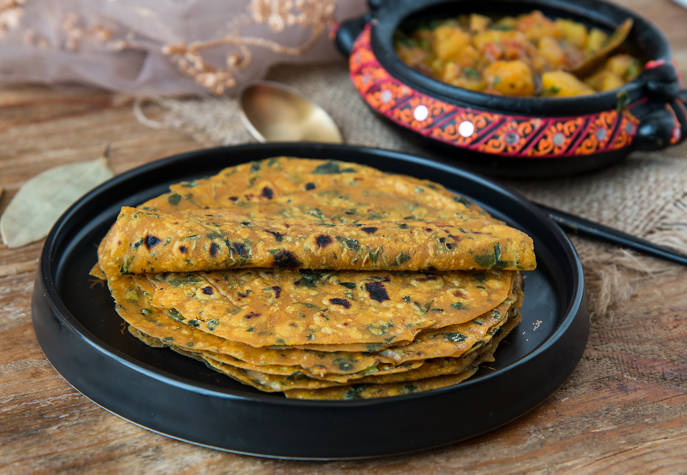

ગુજરાતી મેથીના થેપલા બનાવવાની રીત

ઘટકો:
2 કપ આખા ઘઉંનો લોટ
1/2 કપ મેથીના પાન (મેથીના પાન), બારીક સમારેલા
1/4 કપ દહીં (દહીં / દહીં)
1/2 ચમચી હળદર પાવડર (હલ્દી)
1/2 ચમચી લાલ મરચું પાવડર, (વૈકલ્પિક)
1/4 ચમચી હિંગ (હિંગ)
તેલ, થેપલાને રાંધવા માટે
મીઠું, સ્વાદ માટે
બનાવવાની રીત:
1.ગુજરાતી મેથી થેપલાની રેસીપી બનાવવાનું શરૂ કરવા માટે, એક મોટા બાઉલમાં આખા ઘઉંનો લોટ, જીરું, હળદર પાવડર, મરચું પાવડર, હિંગ પાવડર, મીઠું અને મેથીના પાન મિક્સ કરો.
2.લોટના મિશ્રણમાં દહીં ઉમેરો અને જો જરૂરી હોય તો જ થોડું પાણી ઉમેરીને મક્કમ સરળ કણકમાં ભેળવો. છેલ્લે કણકને કોટ કરવા માટે બે ચમચી તેલ ઉમેરો અને જ્યાં સુધી તે મજબૂત અને મુલાયમ ન થાય ત્યાં સુધી ભેળવો.
3.કણકને ઢાંકીને 15 મિનિટ સુધી રહેવા દો. આયર્ન સ્કીલેટને મધ્યમ તાપ પર પહેલાથી ગરમ કરો. થેપલાના કણકને સમાન ભાગોમાં વહેંચો.
4.થેપ્લાના ભાગોને બોલમાં ફેરવો; તેમને તમારા હાથની હથેળીથી સપાટ કરો.
5.થેપલાના કણકને લોટમાં ડસ્ટ કરો અને તેને લગભગ 6 ઇંચ વ્યાસના પાતળા વર્તુળોમાં ફેરવો. જેમ જેમ તમે તેને રોલ આઉટ કરો છો, ત્યારે તમે તેને રોલઆઉટ કરતી વખતે ચોંટતા અટકાવવા માટે સૂકા લોટમાં કણકને ધૂળ કરતા રહી શકો છો.
બાકીના બોલ સાથે થેપલાના કણકને રોલ કરવાની સમાન પ્રક્રિયા ચાલુ રાખો. જ્યારે તમે રાંધવાનું શરૂ કરો તે પહેલાં તમે થેપલાના કણકના તમામ ભાગોને રોલ આઉટ કરી શકો ત્યારે તે આદર્શ છે.
થેપલાને રાંધવાની રીત:
1.ધીમા તાપ પર તપેલી સાથે, કણકને કણક પર મૂકો. થોડીક સેકન્ડો પછી તમે જોશો કે હવાના નાના ખિસ્સા બહાર નીકળ્યા છે. આ સમયે મેથીના થેપલાને ફ્લિપ કરો અને લગભગ 1/2 ચમચી તેલ અને ફ્લેટ સ્પેટુલાનો ઉપયોગ કરીને થેપલાને રાંધવા માટે હળવા દબાવીને અને વળાંક આપો.
2.મેથીના થેપલાને બીજી બાજુ પલટાવીને દબાવો અને તે જ રીતે ફેરવો. તમે રાંધેલા થેપલાની આસપાસ બ્રાઉન ફોલ્લીઓ જોશો. ગરમીમાંથી દૂર કરો અને સપાટ પ્લેટ પર મૂકો.
3.બાકીના રોલ્ડ આઉટ ભાગો સાથે સમાન પ્રક્રિયા ચાલુ રાખો અને રાંધેલા થેપલાને એક બીજાની ઉપર સ્ટૅક કરો. તેમને સ્ટૅક કરવાથી નરમાઈ જળવાઈ રહે છે અને મેથીના થેપલાને સુકાઈ જતા અટકાવે છે, ભેજ જાળવે છે, તેમની રચના ખૂબ નરમ રાખે છે.
4.નોંધ કરો કે થેપ્લાસ વધુ ગરમી પર રાંધવામાં આવે છે અને તેથી તે ખૂબ જ ઝડપથી રાંધે છે; જો તમને ઉચ્ચ ગરમી અસુવિધાજનક લાગે તો ગરમીને મધ્યમ કરો. ખાતરી કરો કે તમારી પાસે તમારા એક્ઝોસ્ટ ચાલુ છે અથવા બારીઓ ખુલ્લી છે, કારણ કે લોખંડની કડાઈ પર વધુ ગરમી પર રસોઈ કરવાથી થોડો ધુમાડો નીકળે છે.
5.સ્વાદિષ્ટ ગુજરાતી મેથી થેપલાને બટાટા નુ શાક સાથે પીરસો આલૂ કી સબઝી અથવા આમ ચૂંદા અથાણું સાથે રોલ અપ કરો.